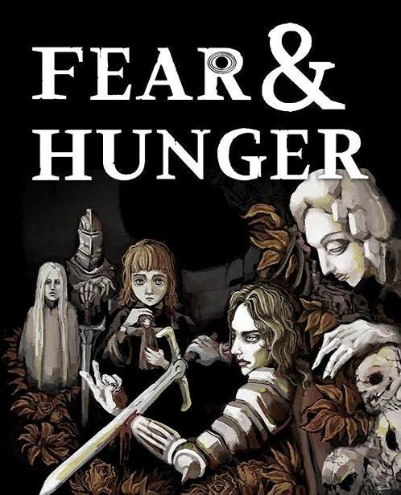
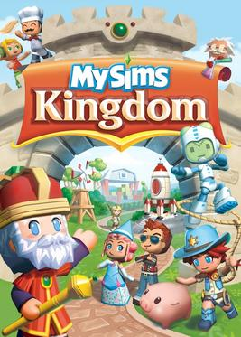

- Fallout New Vegas

This game takes the spot for my favourite game of all time. Even if the game was released about 15 years ago, it still remains one of the best games ever created, influencing media for decades after. The writing is fantastic, and you can read this paper about the moral philosophies of Fallout New Vegas, which is amazingly written.
- Fear & Hunger
- 
F&H is a lesser known game, but still an amazing experience. The music and the art is fascinating, and it is definitely a must-have for indie horror fans. Definitely a game stronger in tonality, but it's one of the most beautiful indie horror games to have come out in the last 10 years.
- MySims Kingdom
- 
An odd entry on the list, given the others. A family game that is about meeting cute characters and building contraptions to help them definitely does not fit in with the previous entries, but this is a game I grew up playing and still hold dear to my heart.